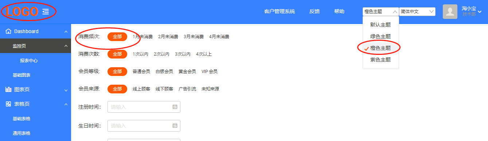

最近一直处于半失业状态，好多年没有更新对前端的理解了，闲来看看前端技术的发展。因为一直是个草台班子，身兼多职东看看西看看，一直没太搞清楚iceworks、ant design， fusion等等一堆阿里系的开源项目。用了半小时用iceworks搭了一个react的模板出来，感觉好像自己突然成了react砖家似的，花了几天时间像猫吃刺猬一样，难以下嘴。总是觉得“ICE Design Pro”没有动态主题配置很不方便。摸索了两天，算是磕磕绊绊的抄出了一个功能。那就仿照这“多语言”设置依葫芦画瓢整一个多主题配置吧。
在路径“\src\layouts\BasicLayout\components\Header”下找到了index.jsx
import SelectLang from '@/components/SelectLang';
import SelectTheme from '@/components/SelectTheme'; //添加一个不存在的组件
<div className={styles.headerAction}>
{/*依葫芦画瓢整个标签，来切换主题*/}
{/*多主题选择*/}
<SelectTheme />
{/*依葫芦画瓢整个标签，来切换主题*/}
{/* 多语言选择 */}
<SelectLang />
然后，照样在“src\components”下把SelectLang文件夹拷贝更名为“SelectTheme”，然后修改"\src\components\SelectTheme\index.jsx"
import React from 'react';
import { Select } from '@alifd/next';
import { getTheme, setTheme } from '@/utils/theme';
const Option = Select.Option;
const Theme_CONFIG = {
'@icedesign/theme': {
text: '默认主题',
icon: '',
},
'@alifd/theme-ice-green': {
text: '绿色主题',
icon: '',
},
'@alifd/theme-ice-orange': {
text: '橙色主题',
icon: '',
},
'@alifd/theme-ice-purple': {
text: '紫色主题',
icon: '',
},
};
function changeTheme(key) {
setTheme(key);
}
export default function SelectTheme() {
const selectedTheme = getTheme();
return (
<Select
onChange={changeTheme}
defaultValue={selectedTheme}
size="small"
style={{ display: 'flex', alignItems: 'center' }}
>
{Object.keys(Theme_CONFIG).map((theme) => {
return (
<Option value={theme} key={theme}>
{Theme_CONFIG[theme].text}
</Option>
);
})}
</Select>
);
}
然后拷贝“src\utils\locale.js”改名为"theme.js"
/**
* 设置当前主题
* @param {String} cTheme
*/
function setTheme(cTheme) {
if (cTheme === undefined) {
cTheme = '@icedesign/theme';
}
if (getTheme() !== cTheme) {
window.localStorage.setItem('theme', cTheme);
// 可以在设置的主题包 @icedesign/theme 和 @alifd/theme-ice-purple 之间切换
window.__changeTheme__(cTheme);
}
}
/**
* 获取当前主题
*/
function getTheme() {
if (!window.localStorage.getItem('theme')) {
window.localStorage.setItem('theme', navigator.theme);
}
return localStorage.getItem('theme');
}
export { setTheme, getTheme };
测试一下，没问题了。总算抄出来一个功能，比较有装逼的成就感了。
当然用iceworks的GUI还需要改一下"ice.config.js"
plugins: [
['ice-plugin-fusion', {
// 通过数组方式配置多主题包
themePackage: [{
name: '@icedesign/theme',
// 设置默认加载主题，如果不进行设置，默认以最后添加主题包作为默认主题
default: true,
// 设置自定义主题颜色，可以在 scss 文件中直接使用该变量，比如： .bg-color { background: $custom-color; }
themeConfig: {
'custom-color': '#000',//测试自定义
},
}, {
name: '@alifd/theme-ice-orange',
themeConfig: {
'custom-color': '#fff', //测试自定义
},
}, {
name: '@alifd/theme-ice-green',
themeConfig: {
'custom-color': '#fff',//测试自定义
},
}, {
name: '@alifd/theme-ice-purple',
themeConfig: {
'custom-color': '#fff',//测试自定义
},
}],
}],
['ice-plugin-moment-locales', {
locales: ['zh-cn'],
}]
],
剩下的就是用npm把这几个主题引入到工程中了，另外fusion提供了一个可以在线编辑主题的功能，可以访问“Fusion”

@alifd 的<Select/>组件貌似还是有一个bug，设置的defaultValue，在页面第一次装置的时候不会触发onChange事件，用 window.onload 来解决，找到根目录下的“src\index.jsx”，修改为：
import React from 'react';
import ReactDOM from 'react-dom';
import './global.scss';
// 引入基础配置文件
import router from './router';
import LanguageProvider from './components/LocaleProvider';
import { getLocale } from './utils/locale';
const locale = getLocale();
/**
* 初始进入加载默认主题
*/
const loadDefaultTheme = function(){
var cTheme = window.localStorage.getItem('theme');
if (cTheme === undefined || cTheme === null) {
cTheme = '@icedesign/theme';
}
window.__changeTheme__(cTheme);
};
const ICE_CONTAINER = document.getElementById('ice-container');
if (!ICE_CONTAINER) {
throw new Error('当前页面不存在 <div id="ice-container"></div> 节点.');
}
else
{
window.onload= loadDefaultTheme;
}
ReactDOM.render(
<LanguageProvider locale={locale}>
{router()}
</LanguageProvider>,
ICE_CONTAINER
);
页面初始化进入，主题可自动引用上一次记忆的设置了。
参考材料：